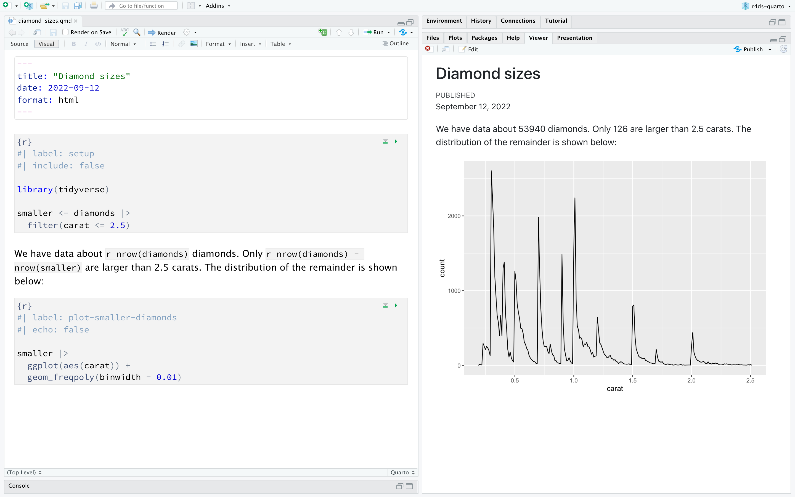
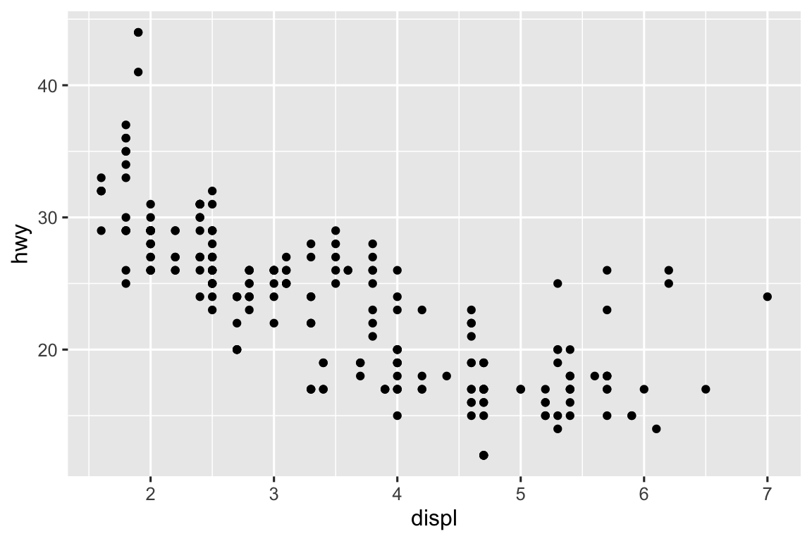

---
title: "Diamond sizes"
date: 2022-09-12
format: html
---
```{r}
#| label: setup
#| include: false
library(tidyverse)
smaller <- diamonds |>
filter(carat <= 2.5)
```
We have data about `r nrow(diamonds)` diamonds.
Only `r nrow(diamonds) - nrow(smaller)` are larger than 2.5 carats.
The distribution of the remainder is shown below:
```{r}
#| label: plot-smaller-diamonds
#| echo: false
smaller |>
ggplot(aes(x = carat)) +
geom_freqpoly(binwidth = 0.01)
```28 Quarto
28.1 引言
Quarto 为数据科学提供了一个统一的创作框架，结合了你的代码、结果和文字。Q uarto 文档完全可重现，并支持数十种输出格式，如 PDF、Word 文件和演示文稿等。
Quarto 文件设计有三种用途：
与决策者交流，他们希望关注结论，而不是分析背后的代码；
与其他数据科学家（包括未来的你！）合作，他们既对你的结论感兴趣，也对你如何得出这些结论（即代码）感兴趣；
作为开展数据科学的环境，作为现代实验室的笔记本，你不仅可以记录你做了什么，还可以记录你当时的想法。
Quarto 是一个命令行界面工具，而不是 R 包。这 意味着通常无法通过 ? 来获取帮助。相 反，当你阅读本章内容并在将来使用 Quarto 时，您应该参考Quarto文档。
如果你是 R Markdown 用户，你可能会觉得Quarto听起来很像 R Markdown。没 错！Q uarto 将 R Markdown 生态系统中许多包（如 rmarkdown、bookdown、distill、xaringan 等）的功能统一到一个一致的系统中，并通过原生支持 Python、Julia 等多种编程语言（包括R）来扩展其功能。在 某种程度上，Quarto 反映了过去十多年来扩展和支持 R Markdown 生态系统的所有经验。
28.1.1 必要条件
你需要使用 Quarto 命令行界面（Quarto CLI），但你不需要显式地安装或加载它，因为当需要时RStudio 会自动完成这两项操作。
28.2 Quarto 基础
下面是一个Quarto文件，一个扩展名为.qmd的纯文本文件:
它包含三种重要类型的内容:
- 用
---包围的YAML头部信息（可选）； - 用
```包围的R代码块； - 与简单文本格式（如
# heading和_italics_）混合的文本。
图 28.1 展示了在 RStudio 笔记本界面中的 .qmd 文档，其中代码和输出交错显示。你 可以通过点击运行图标（它位于代码块顶部的位置，看起来像一个播放按钮）来运行每个代码块，或者通过按下 Cmd/Ctrl + Shift + Enter 来运行。R Studio 执行代码，并将结果显示在代码旁边。

如果你不喜欢在文档中看到图表和输出，而是更想使用 RStudio 的“控制台”和“绘图”面板，你可以点击”Render” 旁边的齿轮图标，并切换到”Chunk Output in Console”，如 图 28.2 所示。

要生成一个包含所有文本、代码和结果的完整报告，请点击“Render”或按下 Cmd/Ctrl + Shift + K。你 也可以通过编程方式使用quarto::quarto_render("diamond-sizes.qmd")来完成这一操作。这 将在查看器面板中显示报告，如图 图 28.3 所示，并创建一个HTML文件。

当你渲染（render）文档时，Quarto 将.qmd文件发送给 knitr（https://yihui.org/knitr/），knitr执行所有的代码块并创建一个新的 markdown（.md）文档，这个文档包含了代码及其输出。随 后，由 knitr 生成的 markdown 文件会被 pandoc（https://pandoc.org）处理，pandoc负责创建最终的文件。这 个过程在 图 28.4 中有展示。这 种两步工作流程的优势在于可以创建非常广泛的输出格式，这将在 章节 29 中学习。

要开始使用你自己的.qmd文件，请在菜单栏中选择File > New File > Quarto Document…。R Studio 将启动一个向导，你可以使用它来预先填充你的文件，其中包含一些有用的内容，以提醒你 Quarto 的关键功能是如何工作的。
以下部分将更详细地介绍 Quarto 文档的三个组成部分：markdown 文本、代码块和 YAML 头部信息。
28.2.1 练习
使用File > New File > Quarto Document来创建一个新的 Quarto 文档。阅 读说明。练 习单独运行各个代码块。然 后点击适当的按钮或使用相应的键盘快捷键来渲染文档。验 证你是否可以修改代码，重新运行它，并查看修改后的输出；
为三种内置格式（HTML、PDF 和 Word）中的每一种创建一个新的 Quarto 文档。渲 染这三个文档。输 出的内容有什么不同？输 入的内容有什么不同？（ 如果需要构建 PDF 输出，你可能需要安装 LaTeX — 如果需要，RStudio 会提示你。）
28.3 可视化编辑器
RStudio 中的可视化编辑器为 Quarto 文档的编写提供了一个“所见即所得”（WYSIWYM）的界面。实 际上，Quarto 文档（.qmd文件）中的文本部分使用 Markdown 编写，Markdown 是一套轻量级的文本文件格式约定。Q uarto 使用的是 Pandoc markdown（Markdown 的一个稍有扩展的版本，Quarto 能够理解），包括表格、引文、交叉引用、脚注、divs/spans、定义列表、属性、原始 HTML/TeX 等，并支持执行代码单元格和查看它们的内联输出。尽 管 Markdown 的设计初衷是易于读写，如你在@sec-source-editor 中所见，学习新的语法仍然是必要的。因 此，如果你不熟悉像 .qmd 文件这样的计算文档，但有使用 Google Docs 或 MS Word 等工具的经验，那么在 RStudio 中使用 Quarto 的最简单方法就是使用可视化编辑器。
在可视化编辑器中，你可以使用菜单栏上的按钮来插入图片、表格、交叉引用等，或者使用通用快捷键<kbd>⌘</kbd>+<kbd>/</kbd>（Mac）或 <kbd>Ctrl</kbd>+<kbd>/</kbd>（Windows/Linux）来插入几乎任何内容。如 果你在行的开头（如 图 28.5 所示），你也可以只输入<kbd>/</kbd>来调用这个快捷键。
![A Quarto document displaying various features of the visual editor such as text formatting (italic, bold, underline, small caps, code, superscript, and subscript), first through third level headings, bulleted and numbered lists, links, linked phrases, and images (along with a pop-up window for customizing image size, adding a caption and alt text, etc.), tables with a header row, and the insert anything tool with options to insert an R code chunk, a Python code chunk, a div, a bullet list, a numbered list, or a first level heading (the top few choices in the tool).](quarto/quarto-visual-editor.png)
使用可视化编辑器插入图片和自定义图片的显示方式也很方便。你 可以直接从剪贴板中将图片粘贴到可视化编辑器中（RStudio 会在项目目录中放置该图片的一个副本并链接到它），或者你可以使用可视化编辑器的Insert > Figure / Image菜单来浏览你想要插入的图片或粘贴其 URL。此 外，使用相同的菜单，你还可以调整图片的大小、添加标题、替代文本和链接。
可视化编辑器还有许多其他我们没有在此列举的功能，随着你使用它进行文档编写的经验增加，你可能会发现这些功能很有用。
最重要的是，虽然可视化编辑器以格式化方式显示你的内容，但实际上，它是以纯 Markdown 格式保存你的内容的，你可以在可视化和源代码编辑器之间来回切换，以使用任一工具查看和编辑你的内容。
28.3.1 练习
- 使用可视化编辑器重新创建 图 28.5 中的文档。
- 使用可视化编辑器，通过Insert菜单然后选择insert anything工具来插入一个代码块。
- 使用可视化编辑器，找出如何：
- 添加脚注。
- 添加水平线。
- 添加块引用。
- 在可视化编辑器中，转到Insert > Citation并插入一篇名为“Welcome to the Tidyverse”的论文的引文，使用其 DOI（数字对象标识符），即 10.21105/joss.01686。渲染文档并观察引文在文档中的显示方式。你的文档的 YAML 部分发生了什么变化？
28.4 源代码编辑器
你也可以在 RStudio 的源代码编辑器中编辑 Quarto 文档，而无需可视化编辑器的帮助。虽 然可视化编辑器对于习惯使用 Google Docs 等工具编写文档的人来说会感觉很熟悉，但源代码编辑器对于有经验的 R 脚本或 R Markdown 文档编写者来说也会感觉熟悉。源 代码编辑器在调试任何 Quarto 语法错误时也非常有用，因为通常在纯文本中更容易发现这些错误。
下面的指南展示了如何在源代码编辑器中使用 Pandoc 的 Markdown 来编写 Quarto 文档。
## Text formatting
*italic* **bold** ~~strikeout~~ `code`
superscript^2^ subscript~2~
[underline]{.underline} [small caps]{.smallcaps}
## Headings
# 1st Level Header
## 2nd Level Header
### 3rd Level Header
## Lists
- Bulleted list item 1
- Item 2
- Item 2a
- Item 2b
1. Numbered list item 1
2. Item 2.
The numbers are incremented automatically in the output.
## Links and images
<http://example.com>
[linked phrase](http://example.com)
{fig-alt="Quarto logo and the word quarto spelled in small case letters"}
## Tables
| First Header | Second Header |
|--------------|---------------|
| Content Cell | Content Cell |
| Content Cell | Content Cell |学习这些的最佳方法就是去尝试使用它们。这 可能需要几天的时间，但很快就会变得驾轻就熟，你甚至不需要再去思考它们。如 果你忘记了，可以通过Help > Markdown Quick Reference 来查看方便的参考表。
28.4.1 练习
通过创建一个简短的简历来实践你所学到的内容。简 历的标题应该是你的名字，并且应该包括（至少）教育或工作经历的标题。每 个部分都应该包含一个以项目符号列出的工作或学位列表。用 粗体突出年份。
使用源编辑器和Markdown快速参考指南，弄清楚如何：
- 添加脚注。
- 添加水平线。
- 添加块引用。
将https://github.com/hadley/r4ds/tree/main/quarto中
diamond-sizes.qmd的内容复制并粘贴到本地的 R Quarto 文档中。检 查是否可以运行它，然后在频率多边形之后添加描述其最显著特征的文本。在 Google Docs 或 MS Word 中创建一个文档（或找到你之前创建的文档），其中包含一些内容，如标题、超链接、格式化的文本等。复 制这个文档的内容，并粘贴到 Quarto 文档的可视化编辑器中。然 后，切换到源代码编辑器并检查源代码。
28.5 代码块
要在Quarto文档中运行代码，需要插入一个块。有 三种方法:
键盘快捷键 Cmd + Option + I / Ctrl + Alt + I。
编辑器工具栏中的Insert按钮图标。
通过手动键入代码块分隔符
```{r}and```.
我们建议你学习键盘快捷键。从 长远来看，这将节省你很多时间!
你可以继续使用你已知并喜爱的键盘快捷键来运行代码：Cmd/Ctrl + Enter。然 而，代码块现在有一个新的键盘快捷键：Cmd/Ctrl + Shift + Enter，这个快捷键会运行代码块中的所有代码。你 可以把代码块想象成一个函数。一 个代码块应该是相对独立的，并且专注于一个单一的任务。
以下部分描述了代码块头部，它由```{r}开始，后面跟着一个可选的代码块标签和各种其他代码块选项，每个选项都在它们自己的行上，并用#|标记。
28.5.1 块标签
块可以被赋予一个可选的标签，例如:
```{r}
#| label: simple-addition
1 + 1
```#> [1] 2这有三个好处：
您可以通过脚本编辑器左下角的下拉代码导航器更轻松地导航到特定的代码块：

代码块产生的图形将具有有用的名称，使得在其他地方使用它们更加方便。更 多信息请参见 小节 28.6。
你可以设置缓存代码块的网络，以避免在每次运行时重新执行耗时的计算。更 多信息请参见 小节 28.8。
您的代码块标签应该简短但富有启发性，并且不应该包含空格。我 们建议使用连字符（-）来分隔单词（而不是下划线_），并避免在代码块标签中使用其他特殊字符。
你通常可以随意标记你的代码块，但有一个代码块名称具有特殊行为：setup。当 你在笔记本模式下时，名为setup的代码块将自动运行一次，并且在运行任何其他代码之前。
此外，代码块标签不能重复，每个代码块标签都必须是唯一的。
28.5.2 块选项
代码块的输出可以通过提供给代码块头部的字段选项进行自定义。k nitr 提供了近 60 个选项，你可以使用它们来定制你的代码块。这 里我们将介绍经常使用的最重要的代码块选项。你 可以在https://yihui.org/knitr/options查看完整的选项列表。
最重要的一组选项控制你的代码块是否被执行以及哪些结果被插入到最终的报告中：
eval: false 阻止代码被评估（显然，如果代码没有被运行，就不会生成结果）。这 对于显示示例代码或禁用一大块代码而不必逐行注释很有用。
include: false 会运行代码，但在最终文档中不显示代码或结果。使 用此选项来设置你不想在报告中显示的代码。
echo: false 阻止代码出现在最终文件中，但结果仍然显示。当 编写面向不想看到底层 R 代码的读者的报告时，请使用此选项。
message: false或warning: false 阻止消息或警告出现在最终文件中。
results: hide 隐藏打印输出；fig.show: hide 隐藏图形。
error: true 即使代码返回错误也继续渲染。这 很少是你希望在报告的最终版本中包括的内容，但如果你需要调试 .qmd 文件内部到底发生了什么，它会非常有用。如 果你正在教授 R 并想故意包含一个错误，它也很有用。默 认情况下，error: false会在文档中出现单个错误时导致渲染失败。
这些代码块选项中的每一个都添加到代码块的头部，跟在#|后面，例如，在下面的代码块中，由于eval设置为false，结果不会被打印出来。
```{r}
#| label: simple-multiplication
#| eval: false
2 * 2
```下表总结了每个选项抑制的输出类型:
| Option | Run code | Show code | Output | Plots | Messages | Warnings |
|---|---|---|---|---|---|---|
eval: false |
X | X | X | X | X | |
include: false |
X | X | X | X | X | |
echo: false |
X | |||||
results: hide |
X | |||||
fig-show: hide |
X | |||||
message: false |
X | |||||
warning: false |
X |
28.5.3 全局选项
随着你更深入地使用 knitr，你会发现一些默认的代码块选项并不符合你的需求，你想要改变它们。
你可以通过在文档的 YAML 部分下的execute中添加首选选项来实现这一点。例 如如果你正在为不需要看到你的代码但只需要看到你的结果和叙述的受众准备报告，你可能会在文档级别设置echo: false。这 将默认隐藏代码，因此只显示你故意选择显示的代码块（使用echo: true）。你 可能会考虑设置message: false和warning: false，但这会使得调试问题变得更加困难，因为你在最终文档中看不到任何消息。
title: "My report"
execute:
echo: false由于 Quarto 被设计为支持多种语言（适用于 R 、Python以及 Julia 等），因此在文档执行级别并非所有 knitr 选项都可用，因为其中一些选项仅适用于 knitr 而不适用于 Quarto 用于运行其他语言代码的其他引擎（如Jupyter）。然 而你仍然可以在 knitr 字段下的opts_chunk中为你的文档设置这些选项作为全局选项。例 如，在编写书籍和教程时，我们设置：
title: "Tutorial"
knitr:
opts_chunk:
comment: "#>"
collapse: true这使用了我们首选的注释格式，并确保代码和输出紧密地交织在一起。
28.5.4 内联代码
还有一种将 R 代码嵌入 Quarto 文档的方法：直接在文本中使用`r `。如 果你在文本中提到数据的属性，这会非常有用。例 如，本章开头使用的示例文档中有：
我们有关于
`r nrow(diamonds)`颗钻石的数据。只 有`r nrow(diamonds) - nrow(smaller)`颗钻石大于 2.5 克拉。剩 余的分布如下所示：
当报告被渲染时，这些计算的结果会被插入到文本中：
我们有关于 53940 颗钻石的数据。只 有 126 颗钻石大于 2.5 克拉。剩 余的分布如下所示：
在将数字插入文本时，format()是你的好帮手。它 允许你设置数字的位数，以便你不会打印出荒谬的精度，还可以设置千位分隔符（big.mark）以使数字更容易阅读。你 可以将这些功能组合成一个辅助函数：
comma <- function(x) format(x, digits = 2, big.mark = ",")
comma(3452345)
#> [1] "3,452,345"
comma(.12358124331)
#> [1] "0.12"28.5.5 练习
添加一节来探讨钻石的尺寸如何随切割、颜色和净度而变化。假 设你正在为不懂R的人编写报告，而不是在每个代码块上设置
echo: false，而是设置一个全局选项。从 https://github.com/hadley/r4ds/tree/main/quarto下载
diamond-sizes.qmd。在 文件中添加一个部分来描述最大的20颗钻石，包括一个显示它们最重要属性的表格。修改
diamonds-sizes.qmd文件，使用label_comma()函数来生成格式优美的输出。同 时，也要包含大于2.5克拉的钻石的百分比。
28.6 图形
Quarto 文档中的图形可以嵌入（例如PNG 或 JPEG 文件）或作为代码块的结果生成。
要从外部文件嵌入图像，你可以在 RStudio 的可视化编辑器中使用Insert 菜单并选择Figure / Image。这 将弹出一个菜单，您可以在其中浏览要插入的图像，并为其添加替代文本或标题，并调整其大小。在 可视化编辑器中，你还可以直接从剪贴板中粘贴图像到文档中，RStudio 将在您的项目文件夹中放置该图像的副本。
如果你包含一个生成图形的代码块（例如包含 ggplot() 调用），生成的图形将自动包含在您的 Quarto 文档中。
28.6.1 图形大小调整
Quarto 中制图的最大挑战在于使你的图形具有合适的尺寸和形状。控 制图形大小的选项主要有五个：fig-width、fig-height、fig-asp、out-width 和 out-height。图 像大小调整具有挑战性，因为存在两种尺寸（R 创建的图形大小和它在输出文档中插入的大小），以及多种指定尺寸的方式（即高度、宽度和宽高比：三者选二）。
我们推荐五个选项中的三个：
如果图形具有一致的宽度，则图形在视觉上会更加赏心悦目。为 此，请在默认设置中设置
fig-width: 6（6 英寸）和fig-asp: 0.618（黄金比例）。然 后在单独的代码块中仅调整fig-asp。使用
out-width控制输出大小，并将其设置为输出文档主体宽度的百分比。我 们建议将out-width设置为“70%”并将fig-align设置为center。这样做既给图形提供了足够的空间，又不会占用太多空间。
要将多个图形放在同一行中，请将
layout-ncol设置为 2（两个图形）、3（三个图形）等。如 果layout-ncol为 2，这将有效地将每个图形的out-width设置为“50%”，如果layout-ncol为 3，则设置为“33%”，依此类推。根 据你想要说明的内容（例如，显示数据或显示图形变化），可能还需要调整fig-width，如下所述。
如果您发现需要眯起眼睛才能阅读图形中的文本，则需要调整 fig-width。如 果 fig-width 大于图形在最终文档中呈现的大小，则文本将太小；如果 fig-width 较小，则文本将太大。您 通常需要进行一些尝试，以确定 fig-width 与文档中最终宽度的正确比例。为 了说明这一点，以下三个图形的 fig-width 分别为 4、6 和 8：


如果你想确保所有图中的字体大小一致，每次设置out-width时，你也需要调整fig-width以保持与默认out-width的相同比例。例 如，如果你的默认fig-width是6，out-width是“70%”，当你将out-width设置为“50%”时，你需要将fig-width 设置为4.3（6 * 0.5 / 0.7）。
图形大小调整和缩放既是一门艺术也是一门科学，要做到准确无误可能需要反复尝试和修改。你 可以在taking control of plot scaling blog post中了解更多关于图形大小调整的信息。
28.6.2 其他重要选项
在本书中，当将代码和文本混合使用时，你可以设置fig-show: hold以便在代码之后显示图形。这 样做的另一个积极效果是，即迫使你将大块的代码与其注释分开，从而提高代码的可读性。
要给图表添加标题，请使用fig-cap。在 Quarto 中，这将使图从内联变为“浮动”。
如果你正在生成 PDF 输出，默认的图形类型是 PDF。这 是一个好的默认设置，因为 PDF 是高质量的矢量图形。但 是，如果你显示数千个点，它们可能会产生非常大且缓慢的图形。在 这种情况下，设置fig-format: "png"以强制使用 PNG 格式。虽 然 PNG 的质量稍低，但会更加紧凑。
给生成图形的代码块命名是个好主意，即使你不经常为其他代码块贴标签。代 码块标签用于在磁盘上生成图形文件的名称，因此命名你的代码块会使在其他情况下选择图形并重复使用变得更加容易（例如，如果你想快速将一个图形放入电子邮件中）。
28.6.3 练习
- 在可视化编辑器中打开
diamond-sizes.qmd文件，找到一颗钻石的图片，复制并粘贴到文档中。双击图片并添加标题。调整图片大小并渲染你的文档。观察图片是如何保存在你当前的工作目录中的。 - 编辑
diamond-sizes.qmd中生成图形的代码块标签，使其以fig-为前缀，并使用 chunk 选项fig-cap为图形添加标题。然后，编辑代码块上方的文本，使用Insert > Cross Reference来添加对该图形的交叉引用。 - 使用以下 chunk 选项逐一更改图形大小，渲染你的文档并描述图形是如何变化的。
fig-width: 10fig-height: 3out-width: "100%"out-width: "20%"
28.7 表
与图形类似，你可以在 Quarto 文档中包含两种类型的表。它 们可以是你在 Quarto 文档中直接创建的 Markdown 表（使用Insert Table菜单），也可以是代码块执行结果生成的表。在 本节中，我们将重点关注后者，即通过计算生成的表。
默认情况下，Quarto 会以你在控制台中看到的方式显示数据框和矩阵：
mtcars[1:5, ]
#> mpg cyl disp hp drat wt qsec vs am gear carb
#> Mazda RX4 21.0 6 160 110 3.90 2.620 16.46 0 1 4 4
#> Mazda RX4 Wag 21.0 6 160 110 3.90 2.875 17.02 0 1 4 4
#> Datsun 710 22.8 4 108 93 3.85 2.320 18.61 1 1 4 1
#> Hornet 4 Drive 21.4 6 258 110 3.08 3.215 19.44 1 0 3 1
#> Hornet Sportabout 18.7 8 360 175 3.15 3.440 17.02 0 0 3 2如果你希望数据以其他的格式显示，你可以使用knitr::kable()函数。下 面的代码生成了 表 28.1。
knitr::kable(mtcars[1:5, ], )| mpg | cyl | disp | hp | drat | wt | qsec | vs | am | gear | carb | |
|---|---|---|---|---|---|---|---|---|---|---|---|
| Mazda RX4 | 21.0 | 6 | 160 | 110 | 3.90 | 2.620 | 16.46 | 0 | 1 | 4 | 4 |
| Mazda RX4 Wag | 21.0 | 6 | 160 | 110 | 3.90 | 2.875 | 17.02 | 0 | 1 | 4 | 4 |
| Datsun 710 | 22.8 | 4 | 108 | 93 | 3.85 | 2.320 | 18.61 | 1 | 1 | 4 | 1 |
| Hornet 4 Drive | 21.4 | 6 | 258 | 110 | 3.08 | 3.215 | 19.44 | 1 | 0 | 3 | 1 |
| Hornet Sportabout | 18.7 | 8 | 360 | 175 | 3.15 | 3.440 | 17.02 | 0 | 0 | 3 | 2 |
查阅?knitr::kable的文档以了解你可以自定义表格的其他方式。对 于更深入的自定义，可以考虑使用 gt、huxtable、reactable、kableExtra、xtable、stargazer、pander、tables 和 ascii 这些包。每 个包都提供了一组工具，用于从 R 代码中返回格式化的表格。
28.7.1 练习
- 在可视化编辑器中打开
diamond-sizes.qmd文件，插入一个代码块，并使用knitr::kable()添加一个表格，显示diamonds数据框的前 5 行。 - 使用
gt::gt()来显示相同的表格。 - 为代码块添加一个以
tbl-为前缀的标签，并使用 chunk 选项tbl-cap为表格添加标题。然后，编辑代码块上方的文本，使用Insert > Cross Reference为表格添加交叉引用。
28.8 缓存
通常，每次渲染文档时都会从头开始，完全不依赖之前的任何状态。这 对于可重复性来说很棒，因为它确保你已经将所有重要的计算都记录在代码中。但 是，如果你有一些需要很长时间才能完成的计算，这可能会很令人头疼。解 决方案是设置cache: true。
你可以使用标准的 YAML 选项在文档级别启用 Knitr 缓存，以缓存文档中所有计算的结果：
---
title: "My Document"
execute:
cache: true
---你也可以在块级别启用缓存，以便在特定块中缓存计算结果:
```{r}
#| cache: true
# code for lengthy computation...
```设置后，这将把代码块的输出保存到磁盘上一个特别命名的文件中。在 后续的运行中，knitr 会检查代码是否发生了改变，如果没有改变，它将重用缓存的结果。
使用缓存系统时需要谨慎，因为默认情况下它仅基于代码本身而不是其依赖项。例 如，这里的 processed_data 代码块依赖于 raw-data 代码块：
```{r}
#| label: raw-data
#| cache: true
rawdata <- readr::read_csv("a_very_large_file.csv")
``````{r}
#| label: processed_data
#| cache: true
processed_data <- rawdata |>
filter(!is.na(import_var)) |>
mutate(new_variable = complicated_transformation(x, y, z))
```缓存 processed_data 代码块意味着，如果 dplyr 管道发生了改变，它将会重新运行，但如果 read_csv() 调用发生了改变，它则不会重新运行。你 可以通过 dependson chunk 选项来避免这个问题：
```{r}
#| label: processed-data
#| cache: true
#| dependson: "raw-data"
processed_data <- rawdata |>
filter(!is.na(import_var)) |>
mutate(new_variable = complicated_transformation(x, y, z))
```dependson应该包含一个字符向量，包含缓存代码块所依赖的每个代码块的名称。每 当 knitr 检测到其中一个依赖项发生变化时，它就会更新缓存代码块的结果。
请注意，如果a_very_large_file.csv文件发生变化，代码块将不会更新，因为 knitr 缓存只跟踪.qmd文件内的变化。如 果你也想跟踪该文件的更改，你可以使用cache.extra选项。这 是一个任意的 R 表达式，当其发生变化时会使缓存失效。一 个很好的函数是file.mtime()：它返回文件最后一次修改的时间。然 后你可以这样写：
```{r}
#| label: raw-data
#| cache: true
#| cache.extra: !expr file.mtime("a_very_large_file.csv")
rawdata <- readr::read_csv("a_very_large_file.csv")
```我们遵循了 David Robinson 的建议来命名这些代码块：每个代码块都以它所创建的主要对象命名。这 使得理解dependson规范变得更加容易。
随着你的缓存策略逐渐变得更加复杂，定期使用knitr::clean_cache()清除所有缓存是一个明智的选择。
28.8.1 练习
- 建立一个代码块的网络，其中 d 依赖于 c 和 b，而 b 和 c 都依赖于 a。让每个代码块都输出
lubridate::now()，设置cache: true，然后验证你对缓存的理解。
28.9 故障排除
Quarto 文档的故障排除可能会很有挑战性，因为你不再处于交互式的 R 环境中，需要学习一些新的技巧。此 外，错误可能是由于 Quarto 文档本身的问题，或者是由于 Quarto 文档中的 R 代码引起的。
在包含代码块的文档中，一个常见的错误是重复的块标签，这在你的工作流程涉及复制和粘贴代码块时尤其普遍。要 解决这个问题，你只需要更改其中一个重复的标签。
如果错误是由于文档中的 R 代码引起的，你应该首先尝试在交互式会话中重现问题。重 启 R，然后Run all chunks，可以从Code 菜单下的Run region进行，或者使用快捷键 Ctrl + Alt + R。如 果你幸运的话，这将重现问题，你就可以在交互式环境中弄清楚发生了什么。
如果这不起作用，你的交互式环境和 Quarto 环境之间一定存在某种差异。你 需要系统地探索这些选项。最 常见的差异是工作目录：Quarto 的工作目录是它所在的目录。通 过在块中包含getwd()来检查工作目录是否符合你的预期。
接下来，集思广益所有可能导致错误的原因。你 需要系统地检查这些设置在你的 R 会话和 Quarto 会话中是否相同。最 简单的方法是设置出问题的块的error: true，然后使用print()和str()来检查设置是否符合你的预期。
28.10 YAML
你可以通过调整 YAML 头部的参数来控制许多其他“整个文档”的设置。你 可能会好奇 YAML 代表什么：它是“YAML Ain’t Markup Language”（YAML 不是标记语言）的缩写，旨在以人类易于读写的方式表示层次结构数据。Q uarto 使用 YAML 来控制输出的许多细节。在 这里，我们将讨论其中的三个：自包含文档、文档参数和参考文献。
28.10.1 自包含
HTML 文档通常有许多外部依赖项（如图像、CSS 样式表和JavaScript 等）。默 认情况下Quarto 会将这些依赖项放置在与你的 .qmd 文件相同目录下的 _files 文件夹中。如 果你在一个托管平台上发布 HTML 文件（例如QuartoPub，https://quartopub.com/），该目录中的依赖项会随你的文档一起发布，因此在发布的报告中是可用的。然 而，如果你想把报告通过电子邮件发送给同事，你可能会更喜欢一个单一的、自包含的HTML 文档，该文档嵌入了其所有依赖项。你 可以通过指定 embed-resources 选项来实现这一点：
format:
html:
embed-resources: true生成的文件将是自包含的，因此它不需要任何外部文件，也不需要互联网连接就可以被浏览器正确显示。
28.10.2 参数
Quarto 文档可以包含一个或多个参数，这些参数的值可以在你渲染报告时设置。当 你想要使用不同的关键输入值重新渲染相同的报告时，参数会很有用。例 如，你可能需要为每个分店生成销售报告，按学生生成考试成绩，或按国家生成人口统计汇总。要 声明一个或多个参数，请使用 params 字段。
这个示例使用了一个名为 my_class 的参数来确定要显示哪种类型的汽车：
---
format: html
params:
my_class: "suv"
---
```{r}
#| label: setup
#| include: false
library(tidyverse)
class <- mpg |> filter(class == params$my_class)
```
# Fuel economy for `r params$my_class`s
```{r}
#| message: false
ggplot(class, aes(x = displ, y = hwy)) +
geom_point() +
geom_smooth(se = FALSE)
```如你所见，参数在代码块中作为名为params的只读列表可用。
你可以直接在 YAML 头部写入原子向量。你 也可以通过在参数值前添加!expr来运行任意的 R 表达式。这 是指定日期/时间参数的好方法。
params:
start: !expr lubridate::ymd("2015-01-01")
snapshot: !expr lubridate::ymd_hms("2015-01-01 12:30:00")28.10.3 参考文献和引文
Quarto 可以自动以多种样式生成引文和参考文献。将 引文和参考文献添加到 Quarto 文档的最直接方法是使用 RStudio 中的可视化编辑器。
要使用可视化编辑器添加引文，请转到Insert > Citation。引 文可以从多种来源插入：
在幕后，可视化模式使用 Pandoc 标准的 Markdown 引文表示法（例如，[@citation]）。
如果你使用前三种方法中的任何一种添加引文，可视化编辑器将自动为你创建一个 bibliography.bib 文件，并将引用添加到其中。它 还会在文档的 YAML 中添加一个 bibliography 字段。随 着你添加更多的引用，这个文件将会填充它们的引文。你 还可以使用许多常见的参考文献格式（包括 BibLaTeX、BibTeX、EndNote、Medline）直接编辑此文件。
要在源代码编辑器中的 .qmd 文件中创建引文，请使用由 ‘@’ 加上来自参考文献文件的引文标识符组成的键。然 后将引文放在方括号中。以 下是一些示例：
Separate multiple citations with a `;`: Blah blah [@smith04; @doe99].
You can add arbitrary comments inside the square brackets:
Blah blah [see @doe99, pp. 33-35; also @smith04, ch. 1].
Remove the square brackets to create an in-text citation: @smith04
says blah, or @smith04 [p. 33] says blah.
Add a `-` before the citation to suppress the author's name:
Smith says blah [-@smith04].当 Quarto 渲染你的文件时，它会在你的文档末尾构建并附加一个参考文献列表。这 个参考文献列表将包含来自你的参考文献文件的每个引用，但它不会包含章节标题。因 此，常见的做法是在文件末尾添加一个参考文献的章节标题，如 # References 或 # Bibliography。
你可以通过在 csl 字段中引用 CSL（引文样式语言）文件来改变你的引文和参考文献的样式：
bibliography: rmarkdown.bib
csl: apa.csl与参考文献字段一样，你的 csl 文件应该包含该文件的路径。在 这里，我们假设 csl 文件与 .qmd 文件位于同一目录下。你 可以在https://github.com/citation-style-language/styles找到常见参考文献样式的 CSL 样式文件。
28.11 工作流程
之前，我们讨论了在控制台中交互式工作，然后在脚本编辑器中捕获有效代码的基本工作流程。Q uarto 将控制台和脚本编辑器结合在一起，模糊了交互式探索和长期代码捕获之间的界限。你 可以在代码块中快速迭代，使用 Cmd/Ctrl + Shift + Enter 进行编辑和重新执行。当 你满意时，你可以继续并开始一个新的代码块。
Quarto 也非常重要，因为它将文本和代码紧密地结合在一起。这 使得它成为了一个出色的分析笔记本（analysis notebook），因为它允许你开发代码并记录你的想法。分 析笔记本与物理科学中的经典实验笔记本有许多相同的目标。它 ：
- 记录了你做了什么以及为什么这么做。无论你的记忆力有多好，如果你不记录你的操作，总有一天你会忘记重要的细节。把它们写下来，这样你就不会忘记了！
- 支持严谨的思维。如果你在进行过程中记录你的想法并继续反思它们，你更有可能得出强有力的分析。这也会在你最终撰写分析并与他人分享时节省你的时间。
- 帮助他人理解你的工作。很少有人会单独进行数据分析，你通常会作为团队的一部分工作。实验笔记本有助于你与同事或实验室伙伴分享你所做的工作以及为什么这么做。
如何有效使用实验笔记本的大部分好建议也适用于分析笔记本。我 们根据自己的经验和 Colin Purrington 关于实验笔记本的建议（https://colinpurrington.com/tips/lab-notebooks），提出以下建议：
确保每个笔记本都有一个描述性的标题、一个引人注目的文件名以及一个简要描述分析目标的第一段。
使用 YAML 头部中的日期字段来记录你开始在该笔记本上工作的日期：
date: 2016-08-23使用 ISO8601 YYYY-MM-DD 格式来确保没有歧义。即 使你通常不这样写日期，也请使用这种格式！
如果你在一个分析想法上花费了很多时间，但它最终是条死胡同，不要删除它！写 一段简短的说明解释为什么它失败了，并把它留在笔记本里。这 将有助于你在未来再次进行该分析时避免走进相同的死胡同。
通常，最好在 R 之外进行数据输入。但 如果你确实需要记录一小段数据，请使用
tibble::tribble()清晰地布局它。如果你发现数据文件中存在错误，永远不要直接修改它，而是编写代码来纠正该值。说 明你为何进行此修复。
在一天结束前，确保你可以渲染笔记本。如 果你在使用缓存，请确保清除缓存。这 样，当代码仍然在你脑海中时，你就可以修复任何问题。
如果你想让你的代码在长远来看是可重复的（即你可以在未来几个月或几年内回来运行它），你需要跟踪你的代码所使用的包的版本。一 种严格的方法是使用
renv（https://rstudio.github.io/renv/index.html），它将包存储在你的项目目录中。一 个快速而简单的方法是包含一个运行sessionInfo()的代码块——虽然这不会让你轻松地重新创建今天的包，但至少你会知道它们是什么。在你的职业生涯中，你将创建很多、很多、很多的分析笔记本。你 将如何组织它们以便将来能够再次找到它们？我 们建议将它们存储在单独的项目中，并想出一个好的命名方案。
28.12 小结
在这一章中，我们向你介绍了Quarto，用于编写和发布可重复计算的文档，这些文档将你的代码和文本融合在一起。你 学习了如何在RStudio中使用可视化编辑器或源代码编辑器编写Quarto文档，了解了代码块的工作原理以及如何为它们定制选项，如何在Quarto文档中包含图形和表格，以及计算的缓存选项。此 外，你还学习了如何调整YAML头部选项以创建自包含或参数化文档，以及如何包含引文和参考书目。我 们还为您提供了一些故障排除和工作流程提示。
虽然这个介绍应该足以让您开始使用Quarto，但还有很多需要学习的内容。Q uarto仍然相对年轻，并且仍在快速发展。要 了解最新的创新动态，最好的地方是Quarto的官方网站https://quarto.org 。
这里有两个我们未涵盖的重要主题：协作以及如何准确地向其他人交流你的想法。协 作是现代数据科学中至关重要的一部分，通过使用像Git和GitHub这样的版本控制工具，您可以使自己的生活更加轻松。我 们推荐《Happy Git with R》，这是一本由R用户Jenny Bryan编写的关于Git和GitHub的友好入门指南。这 本书在线免费提供：https://happygitwithr.com 。
我们也没有提及为了清晰交流你的分析结果，你应该实际写些什么。为 了改进你的写作，我们强烈推荐您阅读Joseph M. Williams & Joseph Bizup的《Style: Lessons in Clarity and Grace》或George Gopen的《The Sense of Structure: Writing from the Reader’s Perspective》。这 两本书都将帮助你理解句子和段落的结构，并为你提供使你的写作更加清晰的工具。（ 如果购买新书，这些书相当昂贵，但它们被许多英语课程使用，所以有很多便宜的二手书可供选择。）George Gopen还在他的网站https://www.georgegopen.com/litigation-articles.html上发表了一系列关于写作的短文。这 些文章虽然面向律师，但几乎所有内容也适用于数据科学家。